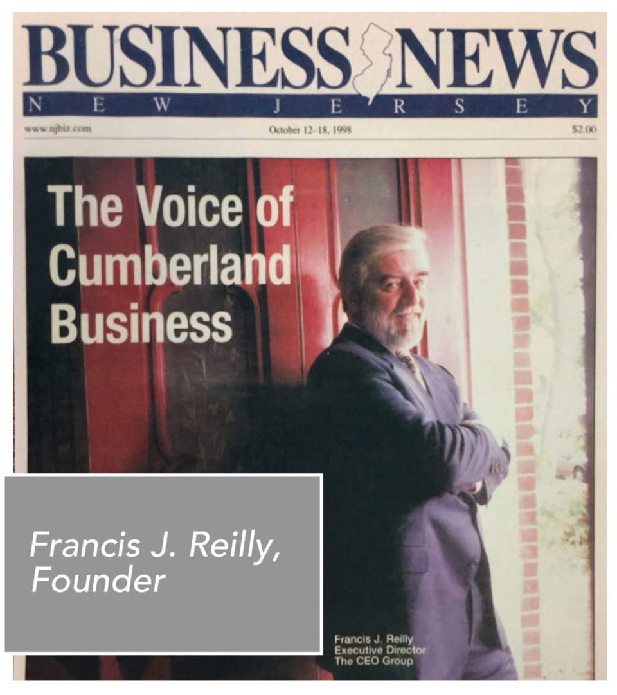

In 1996, Francis J. Reilly saw something missing in southern New Jersey: a unified voice for the chief executives whose companies powered the regional economy. He set out to change that.
The CEO Group was created to fill that vacuum - bringing the leaders of Cumberland County's major private-sector employers around one table to address the issues no single company could tackle alone: regulation, taxation, workforce development, and infrastructure. Nearly thirty years later, that mission endures, now guided by Executive Director Louis N. Magazzu and an elected board drawn entirely from the membership.
“To fashion a concerted effort to fill the vacuum created by the absence of the collective CEO voice in local and regional issues.”
Francis J. Reilly - Founder, The CEO Group, 1996
Founder Francis J. Reilly - Business News New Jersey, 1998A 501(c)(3) non-profit corporation, governed by an elected board of trustees and led by its member CEOs.
Communication - convening the region's executives so they can speak with one clear, credible voice on the policies that shape business and community life.
Education - a long-running guest speaker series and scholarship support that sharpen leadership and invest in the next generation.
Opportunity - charitable giving and advocacy that expand opportunity for workers, students, and families across Cumberland County.
Every initiative flows from a single belief: that engaged leadership, applied together, changes communities.
Bringing the collective CEO voice to taxation, regulation, infrastructure, and workforce issues.
Renowned entrepreneurs and leaders sharing insight with our membership since 1996.
Meaningful support for scholarships, food security, veterans, and education.
Golf tournaments, legacy nights, and gatherings that build trust among leaders.
The CEO Group welcomes the chief executives of the region's established employers. If that's you, let's talk.
Become a member